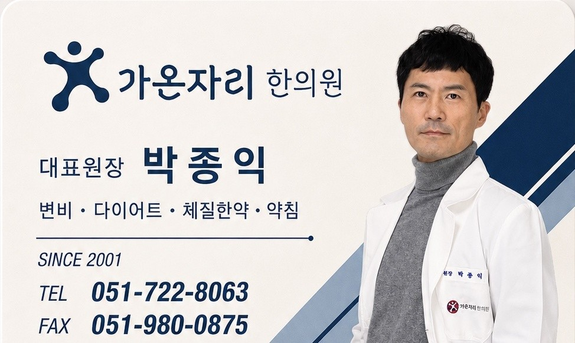

변비
검사는 정상인데 배가 아픈 변비. 장의 움직임과 체질을 함께 보고 원인별로 나눠 다룹니다.
SINCE 2001 · 25년차 한의사
가온자리한의원 대표원장
병명이 같아도 몸은 다릅니다.
25년간 배를 눌러 원인을 찾아왔습니다.

증상만 덮지 않고, 복진으로 병의 자리를 확인한 뒤 처방을 고릅니다.
검사는 정상인데 배가 아픈 변비. 장의 움직임과 체질을 함께 보고 원인별로 나눠 다룹니다.
굶어서 빼는 방식이 아니라, 대사와 체질에 맞춰 몸의 균형을 다시 잡는 한약입니다.
대면 복진을 거쳐 처방합니다. 같은 병이라도 체질이 다르면 약이 달라져야 합니다.
침과 약을 한자리에서. 국소 통증과 만성 염증을 겨냥해 진료실에서 직접 놓습니다.
『상한론』 육경 변증과 복진으로 처방을 고릅니다. 배의 탄력과 흉부의 거안·희안, 협하와 계령괴까지 손끝으로 확인하고 548처방 가운데 지금 이 사람에게 맞는 한 수를 찾습니다.
변비와 소화, 체질에 관해 25년간 쌓아 온 이야기를 채널마다 다른 결로 올립니다.
부산광역시 동래구 중앙대로1325번길 29, 4층 온천동 · 우편번호 47734 · 1호선 동래역에서 도보 3분